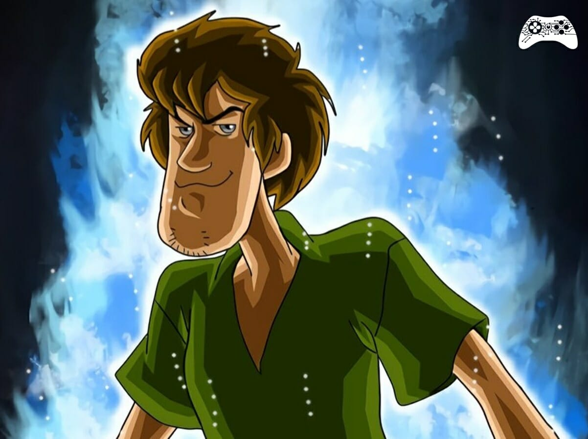

MultiVersus é um novo jogo de luta de plataforma gratuito com um elenco cada vez maior de personagens icônicos e universos lendários, MultiVersus conta com vários modos online, incluindo um formato 2 vs 2 em equipe, temporadas contínuas cheias de conteúdo.

Salsicha é um personagem da classe Pugilista/Híbrido em MultiVersus. Para desbloqueá-lo, você terá que pagar 1.500 moedas de ouro, 700 Gleamium ou 1 bilhete de personagem.
A última coisa que Salsicha se lembra antes da Mudança é ter explorado outra mansão velha e assustadora com seu amigo Scooby, como qualquer outro dia com a turma. Ele encontrou um estranho cristal brilhante e, pensando que era um doce, foi dar uma mordida. Houve um FLASH... e então escuridão. Quando voltou a si, descobriu que possuía poderes incríveis. Ele não sabe de onde vieram ou como funcionam, mas jurou usá-los para derrotar o mal e proteger os seus amigos. Assim que ele conseguir almoçar, claro.
Além de ser super fácil de usar, ele tem os melhores golpes. Assim, aprendendo mais rapido os combos. Mas, isso depende da pessoa.
Alem de ele cair na porrada com todo mundo, ele tem tem uns poderes incriveis e golpes surpreendentemente bons.
Neutro( Parado ): Sanduíche de Punho - CARREGA um soco poderoso. Salsicha possui ARMADURA enquanto CARREGA.
Lateral: Refeição Combo - COMBO de socos que acaba com uma cabeçada forte.
Cima: Baita Ataque de Cima - CARREGA um golpe superior.
Baixo: Pisada Poderosa - CARREGA uma pisada com ARMADURA que causa QUEBRA DE ARMADURA. Depois de acertar um inimigo, pressione novamente para um COMBO com um ataque de palmas que aplica LENTIDÃO nos inimigos.
Neutro( Parado ): Pés Furiosos - Salsicha dá uma enxurrada de chutes para baixo dele e acerta diversas vezes.
Lateral: Baita Joelhada - Uma joelhada rápida para frente que pode ser CARREGADA.
Cima: Tapa Voador - Golpe acima de Salsicha.
Baixo: Abaixa aí - Salsicha usa um ataque com as duas mãos, derrubando os inimigos para baixo.
No chão e No ar: CRUZES! - CARREGUE para aumentar a fúria de Salsicha. Uma vez carregado, Salsicha ganha FÚRIA e aplica ENFURECIDO aos aliados. Ele também deixa cair um Biscoito Scooby que CURA quem o pega. Se Salsicha já estiver estiver com FÚRIA, ele também corre em direção ao seu aliado, aplicando ENFURECIDO a eles e liberando uma onda de choque.
No chão e No ar: Chute Relaxado - Salsicha dá um chute aéreo para frente.
No chão e No ar: Uppercut Poderoso - Salsicha dá um golpe aéreo ascendente, se jogando para cima. A versão ENFURECIDA golpeia várias vezes. ( OBS: No ar o ataque ENFURECIDO não atinge múltiplas vezes.
No chão e No ar: Comida para os Famintos - Salsicha equipa um sanduíche. Uma vez equipado, pressione novamente para lançar o sanduíche como um PROJÉTIL. Pode CURAR ao passar pelos aliados. Se Salsicha estiver ENFURECIDO e com o sanduíche equipado, o sanduíche ficará maior e causará mais DANO. Se Salsicha estiver ENFURECIDO e não segurando um sanduíche, ele dará um ataque similar ao "Abaixa aí" (Golpe aéreo baixo).
No ar: Vem cá! - Salsicha se lança ao chão ganhando ARMADURA e atinge os inimigos próximos ao aterrissar. Se estiver ENFURECIDO, Salsicha criará um PROJÉTIL de onda de choque que acerta várias vezes. Ao invés disso, se um sanduíche estiver equipado, Salsicha lançará o sanduíche como PROJÉTIL.
Última Chance(desbloqueado no nível 7 de domínio): Sua equipe causa 10% a mais de dano após atingir 100 de dano.
Soco Espacial Rugoso(desbloqueado no nível 2 de domínio): Sua equipe causa 5% a mais de dano com ataques corpo a corpo no ar.
Efeito Bola de Neve(desbloqueado no nível 11 de domínio): Seu time causa 7% a mais de dano contra o lutador que causa maior dano.